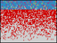

Retirement Age Model
Originally by R. Axtell and J. Epstein. Replicated by Ernesto Carrella and Joseph Harrison
This model simulates the retirement decisions of a heterogeneous population of agents.
Rational agents retire as soon as they are allowed to.
Imitator agents retire when a high proportion of their social network has retired.
Random agents flip a coin each year.